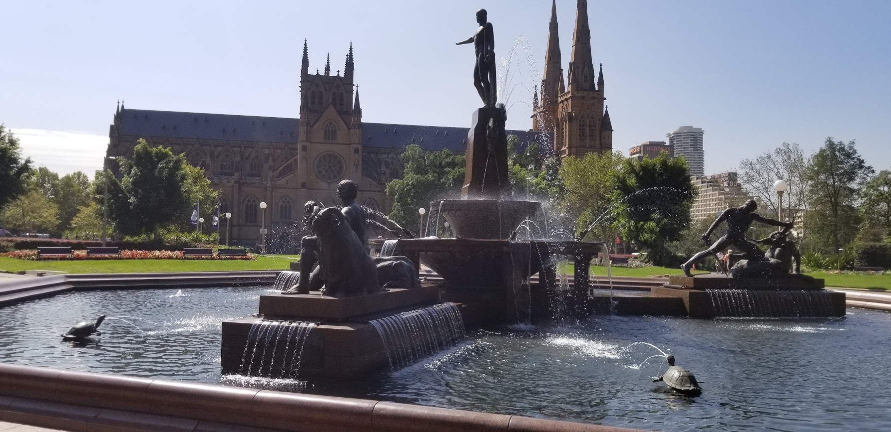

Some Q&A on things I learned about the country I was living in:
How is Australia organized geographically? Australia is divided into six states: New South Wales (I lived here in Sydney), Queensland, Victoria, South Australia, Tasmania, and Western Australia. In addition there are internal territories like the Australian Capital Territory, where the capital of Canberra is located, and the Northern Territory, where the Outback is largely located.
How was Austrlia founded? For centuries, the indigenous Aborigines lived on their own in Australia, but similar to the US it was eventually colonized by European explorers. Beginning in the early 18th century, the British governors started using Australia as a penal colony where they could send their extra overflow prisoners to be held. This influx of settlers led to states being established in Australia which is how it began to resemble the nation we see today.
What are politics like in Australia? Australia has a parliamentary system very similar to the United Kingdom, and in fact Queen Elizabeth II is actually the reigning Queen of Australia as well, although she holds little to no power. The government is also divided into three branches, just like the US system, and the current Prime Minister is Scott Morrison of the Liberal Party. Australia is one of the world's most developed countries with one of the highest standards of living in the world due to their climate, liberties, and progressive policies such as socialied health care.

What are sports and recreation like in Australia? Australia has a very laid back, easy going national attitude, and geographically they are the perfect place for this with the abundance of amazing beaches all around Sydney. Surfing is one of the biggest pastimes in Australia, and cricket, rugby, and netball are sports that are particularly important as well.
What is the biggest difference between daily life in the US and Australia? Like I've mentioned before, the national attitude in Australia is the complete opposite in a lot of ways from our hyper-competitive, every man for himself mentality here in America. One of the first things I was taught there was that they embrace something called "tall poppy syndrome" in which people who attempt to stand on top of others to make themselves stick out more are often "cut down" in favor of a more cooperative, egalitarian mindset. This translates to education as well: I only had to take 3 classes while there which were much less work intensive, and there is much less pressure on getting perfect grades, as well as on going to college immediately after high school or finding a job immediately after college.